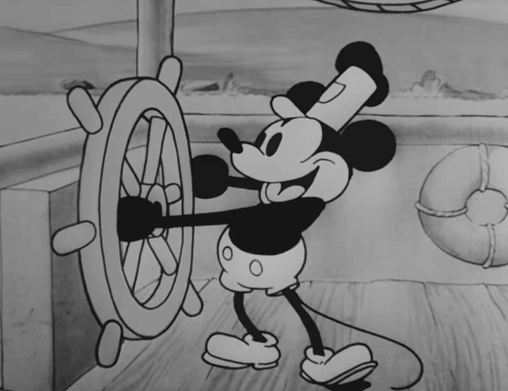

A Brief History of Animation
Animation itself has a rich and complex history, starting as far back as 3000 B.C. with early versions of the zoetrope. However, animation as we know it today did not truly begin setting its roots until the 1920s.
In 1923 Walt Disney founded his own studio and began creating and producing his own animated shorts in the form of "Laugh-o-grams" and "Alice Comedies". The first true mascot of the franchise was Oswald the Rabbit, who was soon bought by Universal, prompting the birth of Mickey Mouse, in his debut film; "Steamboat Willie".

It wasn’t until 1937 that "Snow White", the first American feature-length animated film, was created, bringing with it the birth of new animation techniques.